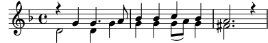
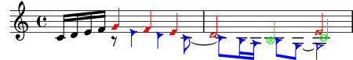
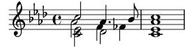

| [ << Conceptes fonamentals ] | [Top][Contents][Index] | [ Ajustament de la sortida >> ] |
| [ < Les veus contenen música ] | [ Up: Les veus contenen música ] | [ Veus explícites > ] |
4.2.1 Sento veus
De les capes més fondes d’una partitura del LilyPond, les més baixes i més fonamental reben el nom de ‘Voice contexts’ («contextos de veu») o, abreujadament, ‘Voices’ («veus»). Les veus s’anomenen a vegades ‘layers’ («capes») a d’altres programes d’edició de partitures.
De fet, una capa o context de veu és l’única que pot contenir música. Si un context de veu no es declara explícitament, es crea un de forma automàtica, com vam veure al principi d’aquest capítol. Certs instruments com l’oboè sols poden tocar una nota cada cop. La música escrita per a aquests instruments sols requereix una veu. Els instruments que poden tocar més d’una nota a la vegada, com el piano, amb freqüència necessitaran diverses veus per codificar les diverses notes i ritmes concurrents que són capaces de tocar.
Una sola veu pot contenir moltes notes dins d’un acord, per suposat; aleshores, quan, exactament, es necessiten diverses veus? En primer lloc observeu aquest exemple de quatre acords:
\relative { \key g \major <d' g>4 <d fis> <d a'> <d g> }![[image of music]](../57/lily-34e301d7.png)
Això es pot expressar utilitzant sols símbols d’acord amb angles
simples, < … >, i per això tan sols es necessita una
veu. Però suposeu que el Fa sostingut fos realment una corxera
seguida d’un Sol corxera, una nota de pas que condueix al La. Ara
tenim duen notes que comencen el mateix moment però tenen
diferents duracions: la negra Re, i la corxera Fa sostingut. Com
es codifica això? No es poden escriure amb un acord perquè totes
les notes d’un acord han de tenir la mateixa duració. I no es
poden escriure com dues notes en seqüència perquè han de començar
al mateix moment. Aquí és on necessiten dues veus.
Vegem com es fa això dins de la sintaxi d’entrada del LilyPond.
La forma més fàcil d’introduir fragments amb més d’una veu a un
sol pentagrama és escriure cada veu com una seqüència (amb
{ … }), i combinar-les simultàniament amb angles
dobles, << … >>. Els fragments també s’han de
separar mitjançant una doble barra invertida, \\, per
situar-los a veus separades.
Sense això, les notes anirien a una sola veu, el que normalment
produeix errors. Aquesta tècnica s’adapta especialment bé a peces
de música que són majorment homofòniques però ocasionalment tenen
seccions curtes de polifonia.
Heus ací com dividim els acords anteriors en dues veus i afegim la nota de pas i la lligadura:
\key g \major % Veu "1" Veu "2" << { g4 fis8( g) a4 g } \\ { d4 d d d } >>![[image of music]](../f5/lily-65af5e8a.png)
Observe com les pliques de la segona veu ara es dirigeixen cap avall.
A continuació vegem un altre exemple senzill:
\key d \minor % Veu "1" Veu "2" << { r4 g g4. a8 } \\ { d,2 d4 g } >> | << { bes4 bes c bes } \\ { g4 g g8( a) g4 } >> | << { a2. r4 } \\ { fis2. s4 } >> |![[image of music]](../8f/lily-e115abeb.png)
No és necessari usar una construcció << \\ >> diferent per
a cada compàs. Per a música que tingui unes poques notes a cada
compàs, aquesta disposició podria facilitar la llegibilitat del
codi, però si hi ha moltes notes a cada compàs podria ser millor
dividir-lo en dues veus separades de la següent manera:
\key d \minor << { % Veu "1" r4 g g4. a8 | bes4 bes c bes | a2. r4 | } \\ { % Veu "2" d,2 d4 g | g4 g g8( a) g4 | fis2. s4 | } >>
Aquest exemple té sols dues veus, però la mateixa construcció es pot usar per codificar tres o més veus mitjançant l’addició de més separadors de barra invertida.
Els contextos de veu porten els noms de "1", "2",
etc. Els primers contextos estableixen les veus externes,
la veu aguda del context "1" i la veu greu del context
"2". Les veus interiors van als contextos "3" i
"4". A cada un d’aquests contextos, la direcció vertical
de les lligadures, pliques, matisos dinàmics, etc., s’ajusta de
forma correcta.
\new Staff \relative { % Veu principal c'16 d e f % Veu "1" Veu "2" Veu "3" << { g4 f e } \\ { r8 e4 d c8~ } >> | << { d2 e } \\ { c8 b16 a b8 g~ 2 } \\ { s4 b c2 } >> | }![[image of music]](../af/lily-4d137c0e.png)
Totes aquestes veus estan separades de la veu principal que conté
les notes just per fora de la construcció << … >>.
Anomenarem això la construcció simultània. Les lligadures
(de prolongació i d’expressió) solament poden connectar notes
que estiguin dins de la mateixa veu, en conseqüència les
lligadures no poden entrar o sortir d’una construcció
simultània. A la inversa, les veus paral·leles de construccions
simultànies diferents sobre el mateix pentagrama són la mateixa
veu. Hi ha altres propietats relatives a les veus que també
impliquen construccions simultànies. A continuació veiem el mateix
exemple, amb colors i caps diferents per a cada veu. Observeu que
els canvis a una veu no afecten a d’altres veus, però persisteixen
més tard dins de la mateixa veu. Observeu també que les notes
lligades es poden dividir entre les mateixes veus de dues
construccions, com s’indica aquí a la veu de triangles blaus.
\new Staff \relative { % Veu principal c'16 d e f << % Bar 1 { \voiceOneStyle g4 f e } \\ { \voiceTwoStyle r8 e4 d c8~ } >> | << % Bar 2 % Continua la Veu 1 { d2 e } \\ % Continua la Veu 2 { c8 b16 a b8 g~ 2 } \\ { \voiceThreeStyle s4 b c2 } >> | }
Les instruccions \voiceXXXStyle estan pensades
principalment per usar-les en documents educatius com el que
presentem aquí. Modifiquen el color del cap, la plica i les
barres, i l’estil del cap, de manera que les veus es poden
distingir fàcilment. La veu u està establerta a rombes vermells,
la veu dos a triangles blaus, la veu tres a cercles verdes amb
aspes, i la veu quatre (que no es fa servir aquí) a aspes color
magenta. \voiceNeutralStyle (que tampoc no es fa servir
aquí) retorna tot a l’estil predeterminat. Veurem més endavant
com l’usuari pot crear instruccions com aquestes. Vegeu
Visibilitat i color dels objectes i
Ús de variables per als ajustaments de disposició.
La polifonia no canvia la relació de les notes dins d’un bloc
\relative. L’alçada de cada nota encara es calcula amb
relació a la nota que la precedeix immediatament, o a la primera
nota de l’acord precedent. Així, en
\relative c' { notaA << < notaB notaC > \\ notaD >> notaE }
notaB és relativa a notaA
notaC és relativa a notaB, no a notaA;
notaD és relativa a notaB, no a notaA ni a
notaC;
notaE és relativa a notaD, no a notaA.
Una forma alternativa, que podria ser més clara si les notes a les
veus estan molt separades, és col·locar una instrucció
\relative al principi de cada veu:
\relative c' { notaA … }
<<
\relative c'' { < notaB notaC > … }
\\
\relative g' { notaD … }
>>
\relative c' { notaE … }
Finalment, analitzem les veus en una peça de música més complexa. Heus aquí les notes dels dos primers compassos del segon dels Dos Nocturns de Chopin, Op 32. Aquest exemple s’utilitzarà en fases posteriors dins del present capítol i el següent, per il·lustrar diverses tècniques per produir notació, i per tant us demanem que ignoreu per ara qualsevol cosa al codi subjacent que li sembli misteriós i tan sols es concentri a la música i les veus (totes les complicacions s’explicaran a seccions posteriors).
![[image of music]](../55/lily-bae1f4e8.png)
Amb freqüència, la direcció de les pliques s’utilitza per indicar la continuïtat de dues línies melòdiques simultànies. En aquest cas, totes les pliques de les notes agudes es dirigeixen cap amunt i les de la notes greus cap avall. Aquesta és la primera indicació que es requereix més d’una veu.
Però la necessitat real de diverses veus apareix quan hi ha notes que comencen al mateix temps però tenen duracions diferents. Observeu les notes que comencen a la tercera part del primer compàs. El La bemoll és una negra amb puntet, el Fa és una negra i el Re bemoll és una blanca. Aquestes notes no es poden escriure com un acord perquè totes les notes d’un acord han de tenir la mateixa duració. Tampoc es poden escriure com notes seqüencials, ja que han de començar al mateix temps. Aquesta secció del compas requereix tres veus, i la pràctica comuna seria escriure tot el compàs com tres veus com es mostra a sota, on hem usat diferents caps i colors per a la tres veus. Un cop més, el codi que hi ha a aquest exemple s’explicarà més tard, així que ignoreu tot el que no entengueu.
![[image of music]](../73/lily-18ffc3d0.png)
Intentarem codificar aquesta música partint de zero. Com veurem,
això s’enfronta a certes dificultats. Començarem tal com hem
après, usant la construcció << \\ >> per introduir la
música del primer compàs a tres veus:
\new Staff \relative { \key aes \major << { c''2 aes4. bes8 } \\ { <ees, c>2 des } \\ { aes'2 f4 fes } >> | <c ees aes c>1 | }![[image of music]](../f1/lily-ea16ef4b.png)
Les direccions de les pliques s’assignen automàticament de forma
que les veus de numeració imparell reben les pliques cap amunt i les
de numeració parell cap avall. Les pliques de les veus 1 i 2
són correctes, però les pliques de la veu 3 haurien d’anar cap
avall en aquest fragment en particular. Podem corregir això
simplement oblidant-nos de la veu tres i situant la música a la
veu quatre. Això es fa escrivint un altre parell de barres
invertides (\\).
\new Staff \relative { \key aes \major << % Veu u { c''2 aes4. bes8 } \\ % Veu dos { <ees, c>2 des } \\ % Omet Veu tres \\ % Veu quatre { aes'2 f4 fes } >> | <c ees aes c>1 | }
Veiem que això arregla la direcció de la plica, però la
col·locació horitzontal de les notes no és la desitjada. El
LilyPond desplaça les notes interiors quan elles o les seves
pliques d’una altra manera col·lisionarien amb les veus exteriors,
però això no és el més adequat per a música de piano. En altres
situacions, els desplaçaments que el LilyPond aplica poden no
eliminar les col·lisions. El LilyPond aporta diverses formes
d’ajustar la col·locació horitzontal de les notes. Encara no
estem preparats per veure com es corregeix això, per la qual cosa
deixarem el problema per a una secció posterior (vegeu la
propietat force-hshift a
Ajustament de la notació amb superposicions).
Nota: No es poden crear lletres ni objectes d’extensió (com ara lligadures, reguladors, etc.) ‘entre’ veus diferents.
Vegeu també
Referència de la notació: Veus múltiples.
| [ << Conceptes fonamentals ] | [Top][Contents][Index] | [ Ajustament de la sortida >> ] |
| [ < Les veus contenen música ] | [ Up: Les veus contenen música ] | [ Veus explícites > ] |